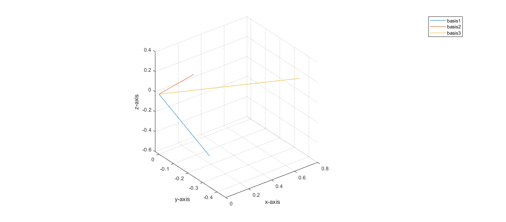

Gram-Schmidt
%{ A classic method for constructing an orthonormal basis is known as Gram- Schmidt orthogonalization. - First, one generates an arbitrary unit vector (e.g., by normalizing a vector created with randn). - Each subsequent basis vector is created by generating another arbitrary vector, subtracting off the projections of that vector along each of the previously created basis vectors, and normalizing the remaining vector. - Write a MATLAB function gramSchmidt that takes a single argument, N, specifying the dimensionality of the basis. It should then generate an N×N matrix whose columns contain a set of orthogonal normalized unit vectors. - Try your function for N = 3, and plot the basis vectors (you can use MATLAB’s rotate3d to interactively examine these). Check your function numerically by calling it for an N larger than 3 and verifying that the resulting matrix is orthonormal. %} % I could not figure out the recursive portion! n = 3 ; gramSchmidt(n)
Basis 1 vs. Basis 2
vecLen1 = 1.000000
vecLen2 = 1.000000
Angle = 90.000000
Basis 1 vs. Basis 3
vecLen1 = 1.000000
vecLen2 = 1.000000
Angle = 90.000000
Basis 2 vs. Basis 3
vecLen1 = 1.000000
vecLen2 = 1.000000
Angle = 90.000000
ans =
Columns 1 through 7
0.1110 -0.2612 -0.4213 -0.2536 -0.4571 -0.2370 0.2837
0.3341 0.0258 0.0254 -0.2100 0.1976 -0.4713 -0.3975
0.6448 -0.4601 0.3086 -0.0881 -0.1550 0.1672 -0.2679
Columns 8 through 10
-0.0998 0.5616 0.0819
-0.3614 -0.1087 0.5305
0.0809 -0.0012 -0.3730
